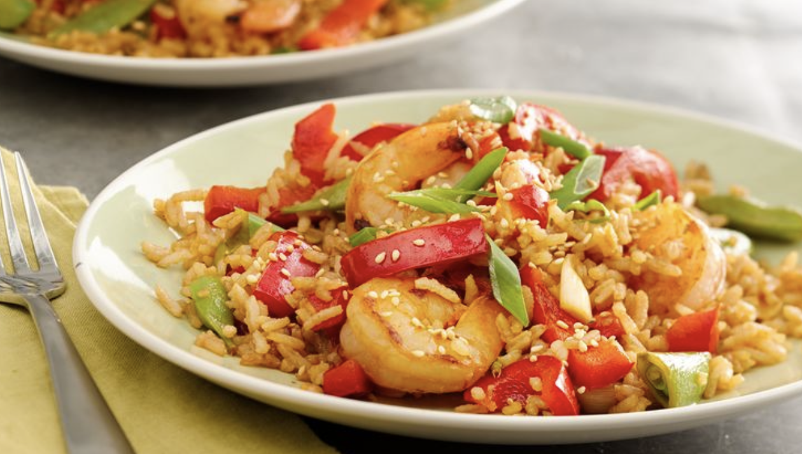

Shrimp Fried Rice
This recipe is pretty good looking so we are going to try to make it

INGREDIENTS
- 2 tsp vegetable oil
- 1/2 lb shrimp, peeled
- 1 red bell pepper sliced into thin strips & halved
- 1/2 cup sugar snap peas cut diagonally
- 3 green onions cut diagonally, whites & greens separated
- 1 tsp finely chopped gingerroot
- 3 cloves garlic, finely chopped
- 5 tsp soy sauce
- 1 tbsp packed brown sugar
- 1.5 cups hot cooked white rice (without salt/butter)
- 2 tbsp lime juice
- 1 tbsp sesame seeds, toasted
- Wash your damn hands
- Heat 10-inch nonstick skillet over medium-high heat. Add 1 teaspoon oil, and heat until shimmering. Add shrimp; cook 2 minutes without moving. Add Sriracha sauce, and stir. Cook 1 minute longer; transfer shrimp with slotted spoon to small bowl, and cover with foil.
- Add remaining 1 teaspoon oil, the bell pepper, peas and whites of onions to skillet, and cook 2 to 3 minutes or until softened, stirring constantly.
- Add gingerroot and garlic; cook and stir about 30 seconds longer or until fragrant.
- Add soy sauce and brown sugar; cook 1 minute longer.
- Add rice; cook about 1 minute or until broken up and warmed.
- Return shrimp to pan; cook 1 minute to combine flavors. Stir in lime juice. Top with onion greens and toasted sesame seed.
HOW TO MAKE IT DANK
fuck there is a lot to do here